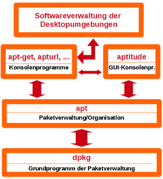

Problembehebung
Dieser Artikel wurde für die folgenden Ubuntu-Versionen getestet:
Dieser Artikel ist größtenteils für alle Ubuntu-Versionen gültig.
Zum Verständnis dieses Artikels sind folgende Seiten hilfreich:
- Abhängigkeiten verhindern die Installation...
- Zurücksetzen der Konfigurationsdateien
- Zurücksetzen von proposed-Aktualisierungen...
- Es werden "kaputte" Pakete gemeldet
- Die Installation von Paketen wurde unterbr...
- Die Installation/Deinstallation von Pakete...
- Probleme beim Aktualisieren der Paketquell...
- Fehler beim Reaktivieren gelöschter PPAs
- Fehler beim Setzen des Eigentümers
- Probleme mit Lockdateien
- Proxyserver in Unternehmen
- Archivverzeichnis fehlt
- Fehler in /var/lib/dpkg/available
- Apt steckt bei [100%] Reading package list...
- Zu Hostnamen gehört keine Adresse
- Paketverwaltung unbrauchbar (Segfault)
- Dateilisten-Datei beschädigt
- Sämtliche Pakete neu installieren
- status-Datei gelöscht oder kaputt
- Kein Speicherplatz mehr frei
- Links
Durch fehlerhafte oder unpassende Paketquellen, durch die Installation mangelhaft erstellter Pakete oder durch Abstürze bei aktiver Verwendung kann es zu Problemen mit der Paketverwaltung APT kommen. Folgendes Schaubild verdeutlicht, dass die Fehler an unterschiedlichen Stellen und in verschiedenen Programmen auftreten können.

In diesem Artikel soll versucht werden, Probleme mit der Paketverwaltung und ihre Lösung zu schildern.
Abhängigkeiten verhindern die Installation eines Pakets¶
Die folgenden Pakete besitzen unerfüllte Abhängigkeiten: kdelibs3-devel: Hängt ab von: libxslt-devel aber es wird nicht installiert werden Hängt ab von: libxml2-devel aber es wird nicht installiert werden
Gefährlicher ist es, wenn die Installation zwar möglich ist, aber nur um den Preis der Deinstallation zahlreicher anderer Komponenten, die man möglicherweise benötigt. Wenn gewarnt wird, dass Pakete deinstalliert werden, ohne dass man damit gerechnet hat, sollte man die Aktion im Zweifelsfall abbrechen.
Dieses Problem tritt vor allem dann auf, wenn man Paketquellen verwendet, die nicht für Ubuntu geeignet sind.
Lösung¶
Nur speziell für Ubuntu ausgewiesene Paketquellen verwenden (siehe auch Fremdquellen).
Zurücksetzen der Konfigurationsdateien¶
Wurde an den systemweiten Konfigurationsdateien Änderungen vorgenommen, die zu Fehlern führen, ist aber eine funktionierende Form nicht mehr rekonstruierbar, so kann mit folgendem Befehl das Paket reinstalliert werden, sodass alle Paketdateien inkl. der Konfigurationsdateien durch den Standard ersetzt werden:
sudo apt-get -o dpkg::options::="--force-confnew" -o dpkg::options::="--force-confmiss" --reinstall install PAKET
Zurücksetzen von proposed-Aktualisierungen¶
Wurden versehentlicherweise Pakete aus den proposed-Quellen installiert, können nach dem unter Apt-Pinning beschriebenen Verfahren die Pakete wieder auf eine stabile Version gedowngradet (herabgesetzt) werden.
Es werden "kaputte" Pakete gemeldet¶
Die folgenden Pakete besitzen unerfüllte Abhängigkeiten: z600cups: Hängt ab von: cups (>= 1:1.1.15-10) aber 1.1.20-103 ist installiert E: Unerfüllte Abhängigkeiten. Versuche -f zu benutzen.
Dieses Problem tritt dann auf, wenn man ein Paket "von Hand" installiert hat, ohne dessen Abhängigkeiten zu erfüllen.
Die Installation von Paketen wurde unterbrochen¶
E: dpkg was interrupted, you must manually run 'dpkg --configure -a' to correct the problem.
Wenn während der Installation von Paketen die Stromzufuhr des Rechners unterbrochen wird, kann das auch für die Paketverwaltung Folgen haben. Fand der Ausfall während des Downloads und somit vor der eigentlichen Installation statt, kann der Installationsvorgang wiederholt werden, sodass dieser automatisch an passender Stelle fortgesetzt wird. Wenn aber bereits Dateien eines Pakets installiert wurden, ohne dass die Installation oder Konfiguration zu Ende geführt wurde, gibt es eine entsprechende Fehlermeldung.
Die Installation/Deinstallation von Paketen endet mit Fehlermeldungen¶
dpkg: Fehler beim Bearbeiten von gettext (--configure): Unterprozess post-installation script gab den Fehlerwert 1 zurück
dpkg: Fehler beim Bearbeiten von magicolor2530dl (--remove): Unterprozess post-removal script gab den Fehlerwert 2 zurück
Bei der Abarbeitung von postinst/preinst- bzw. postrm/prerm-Maintainer Skripten  kommt es zu Fehlern.
kommt es zu Fehlern.
Lösung¶
Eine nicht ganz saubere Lösung ist es, diese entsprechenden Skripte umzubenennen. Diese Scripte befinden sich in /var/lib/dpkg/info/.
Achtung!
Nur die zum entsprechenden Paket gehörigen Skripte umbenennen.
Besser (aber schwieriger) ist es, beim entsprechende Skript zu überprüfen, welche Bedingung nicht stimmt und es deswegen zu der Fehlermeldung kommt.
Probleme beim Aktualisieren der Paketquellen¶
Ungültige Signatur von Paketquellen¶
W: GPG-Fehler: http://de.archive.ubuntu.com maverick Release: Die folgenden Signaturen waren ungültig: BADSIG 40976EAF237D05B5 Ubuntu Archive Automatic Signing Key <ftpmaster@ubuntu.com> W: Fehlschlag beim Holen von http://extras.ubuntu.com/ubuntu/dists/maverick/Release
Mehrere Pakete der Größe: 0kB (Lösung 2)¶
E: Die Paketindexdateien sind beschädigt: Kein Filename:-Feld für Paket ubuntu-keyring.
Dieses Problem kann nach einer Systemaktualisierung auftreten.
Lösung 1¶
Mittels No-Cache und BrokenProxy ein neuladen erzwingen.
sudo aptitude -o Acquire::http::No-Cache=True -o Acquire::BrokenProxy=true update
Lösung 2¶
Den Speicherbereich für Statusinformationen jeder in der sources.list angegebenen Paketquelle zurücksetzen und neu laden:
sudo rm -rf /var/lib/apt/lists/* sudo mkdir /var/lib/apt/lists/partial # Für Versionen bis Ubuntu 10.04 Lucid Lynx sudo apt-get update
Fehler beim Einlesen der Paketliste¶
E: Encountered a section with no Package: header E: Problem with MergeList /var/lib/apt/lists/archive.canonical.com_ubuntu_dists_natty_partner_i18n_Translation-de E: Die Paketliste oder die Statusdatei konnte nicht eingelesen oder geöffnet werden.
Failed to exec method /usr/lib/apt/methods/ E: Method has died unexpectedly! E: Unterprozess hat Fehlercode zurückgegeben (100) E: Methode /usr/lib/apt/methods/ ist nicht korrekt gestartet
Diese Probleme können nach einer Systemaktualisierung auftreten.
Lösung¶
Es ist der selbe Lösungsansatz wie bei Ungültige Signatur von Paketquellen anzuwenden.
Öffentlicher Schlüssel von extras.ubuntu.com fehlt¶
W: GPG-Fehler: http://extras.ubuntu.com oneiric Release: Die folgenden Signaturen konnten nicht überprüft werden, weil ihr öffentlicher Schlüssel nicht verfügbar ist: NO_PUBKEY 16126D3A3E5C1192
Dieses Problem kann nach einer Systemaktualisierung auftreten.
Lösung¶
Kann der Schlüssel nicht mit apt/apt-key importiert werden, hilft eine Neuinstallation des Pakets ubuntu-extras-keyring:
sudo apt-get --reinstall install ubuntu-extras-keyring
Aktualisieren schlägt mit GPG-Fehler fehl¶
W: GPG error: http://ppa.launchpad.net jaunty Release: The following signatures couldn't be verified because the public key is not available: NO_PUBKEY 632D16BB0C7135A6
Ggf. funktioniert das Aktualisieren eines aufgenommenen PPAs nicht reibungslos, weil der Schlüssel trotz ordnungsgemäßen Vorgehens nicht installiert wurde (insbesondere unter Ubuntu 11.10 vermehrt beobachtet).
Lösung¶
Diese Meldung besagt, dass der Authentifizierungsschlüssel nicht importiert wurde. Gelöst werden kann das Problem in diesem Beispiel mit dem Befehl
sudo apt-key adv --keyserver keyserver.ubuntu.com --recv-keys 632D16BB0C715DA6
Die Schlüsselnummer muss natürlich entsprechend der Fehlermeldung angepasst werden, siehe ggf. auch auf launchpad.net .
Fehler beim Reaktivieren gelöschter PPAs¶
Falls beim Wiederaktivieren eines zuvor deaktivierten oder gelöschten PPAs Probleme beim Importieren des Signierungsschlüssels auftreten, muss dieser zuerst komplett aus den APT-Schlüsseldatenbanken entfernt werden.
Um den Name (ID) des richtigen Schlüssels zu erfahren, kann man direkt in der Datenbank nachschauen:
sudo apt-key list --keyring /etc/apt/trusted.gpg sudo apt-key list --keyring /etc/apt/trusted.gpg~
Ein Ausschnitt könnte folgendermaßen aussehen:
[...] pub 1024R/12DE56F8 2011-01-01 uid Launchpad PPA for Ubuntu User pub 1024R/5753AA42 2010-11-23 uid Launchpad PPA for Edubuntu Developers [...]
Soll nun der Schlüssel des PPAs von "Ubuntu User" entfernt werden, werden die folgenden zwei Befehle ausgeführt:
sudo apt-key --keyring /etc/apt/trusted.gpg del 12DE56F8 sudo apt-key --keyring /etc/apt/trusted.gpg~ del 12DE56F8
Abschließend muss noch der Speicherbereich für Statusinformationen nach Paketverwaltung/Problembehebung zurückgesetzt werden.
Hinweis:
Das Entferen eines PPAs mit ppa-purge reicht nicht aus, da die Schlüssel nicht entfernt werden, sondern lediglich die Quelle deaktiviert wird (und das Paket auf die nächstniedrigere Version zurückgesetzt wird).
Fehler beim Setzen des Eigentümers¶
dpkg: Fehler beim Bearbeiten von /var/cache/apt/archives/linux-image-3.0.0-12-generic_3.0.0-12.20_i386.deb (--unpack): Fehler beim Setzen des Eigentümers von »./boot/vmlinuz-3.0.0-12-generic«: Die Operation ist nicht erlaubt dpkg-deb: Fehler: Unterprozess einfügen wurde durch Signal (Datenübergabe unterbrochen (broken pipe)) getötet Examining /etc/kernel/postrm.d . run-parts: executing /etc/kernel/postrm.d/initramfs-tools 3.0.0-12-generic /boot/vmlinuz-3.0.0-12-generic run-parts: executing /etc/kernel/postrm.d/zz-update-grub 3.0.0-12-generic /boot/vmlinuz-3.0.0-12-generic Fehler traten auf beim Bearbeiten von: /var/cache/apt/archives/linux-image-3.0.0-12-generic_3.0.0-12.20_i386.deb E: Sub-process /usr/bin/dpkg returned an error code (1)
Dieser Fehler tritt auf, wenn Systemverzeichnisse sich nicht auf einem Linux-Dateisystem befinden.
Lösung¶
Systemordner über fstab in Dateisystem mit ausreichender Rechteverwaltung einbinden. U.U. muss eine entsprechende Partition erst angelegt werden: Manuelle Partitionierung
Probleme mit Lockdateien¶
Datei oder Verzeichnis nicht gefunden¶
E: Lockdatei /var/lib/apt/lists/lock konnte nicht geöffnet werden - open (2: Datei oder Verzeichnis nicht gefunden) E: Das Listenverzeichnis kann nicht gesperrt werden
E: Lockdatei /var/cache/apt/archives/lock konnte nicht geöffnet werden - open (2: No such file or directory) E: Das Downloadverzeichnis konnte nicht gesperrt werden.
Lösung¶
Die Lockdatei und das zugrunde liegende Verzeichnis manuell anlegen. Für das erste Beispiel also:
sudo mkdir -p /var/cache/apt/archives sudo touch /var/cache/apt/archives/lock
Proxyserver in Unternehmen¶
PPA Repository Key lässt sich nicht über Proxy hinzufügen¶
E: HTTP fetch error 6 E: Could not resolve host: keyserver.ubuntu.com
E: Die folgenden Signaturen konnten nicht überprüft werden, weil ihr öffentlicher Schlüssel nicht verfügbar ist
Lösung¶
Die Environment-Einstellungen müssen dem Root-Benutzer im sudo übergeben werden mit der Option "-E"
sudo -E apt-key adv --keyserver http://keyserver.ubuntu.com:80 ...
Ressource ist zur Zeit nicht verfügbar¶
E: Konnte Sperre /var/cache/apt/archives/lock nicht bekommen - open (11: Die Ressource ist zur Zeit nicht verfügbar) E: Das Verzeichnis /var/cache/apt/archives/ kann nicht gesperrt werden
oder
E: Konnte Sperre /var/lib/dpkg/lock nicht bekommen - open (11: Die Ressource ist zur Zeit nicht verfügbar) E: Das Verzeichnis /var/lib/dpkg/ kann nicht gesperrt werden
Lösung¶
Arbeitet bereits ein anderes Programm zur Paketverwaltung im Hintergrund? Dies kontrolliert man zuerst mit
sudo lsof /var/cache/apt/archives/lock
um dann gegebenenfalls mit ps herauszufinden, welcher Prozess die Paketverwaltung blockiert. Warten auf das Terminieren des Prozesses löst das Problem meist. Sollte der Prozess hängen, kann er mit kill zum Beenden gezwungen werden. Sollte der Lock danach immer noch nicht freigegeben sein, kann man als letzte Möglichkeit den Lock mit Rootrechten löschen. Nach dem Löschen muss die Lockdatei erneut angelegt werden, zum Beispiel mit
sudo touch /var/cache/apt/archives/lock
Keine Berechtigung¶
E: Lockdatei /var/lib/apt/lists/lock konnte nicht geöffnet werden - open (13: Keine Berechtigung)
Lösung¶
Man sollte das eingegebene Kommando nochmal mit Rootrechten ausführen.
Archivverzeichnis fehlt¶
E: Archivverzeichnis /var/cache/apt/archives/partial fehlt.
Lösung¶
Bis Ubuntu 10.04 wird ein fehlendes Verzeichnis für Statusinformationen während der Aktualisierung der Paketindexdateien nicht automatisch angelegt. Durch Neuanlegen des Verzeichnisses wird das Problem behoben:
sudo mkdir -p /var/lib/apt/lists/partial
Fehler in /var/lib/dpkg/available¶
Vorkonfiguration der Pakete ... dpkg: Fehler: Parsen der Datei »/var/lib/dpkg/available«, nahe Zeile 0: nach Feldname »../../../../share/pyshared/UpdateManager/check-meta-release.py« muss ein Doppelpunkt folgen E: Sub-process /usr/bin/dpkg returned an error code (2)
Durch Verletzen der Policy von Versionsbezeichnung von Maintainern, kann es zu Meldungen bezüglich fehlender oder nicht erlaubter Zeichen kommen.
Lösung¶
Durch Entfernen der Datei /var/lib/dpkg/available wird das Problem behoben:
sudo dpkg --clear-avail
Apt steckt bei [100%] Reading package lists¶
$ sudo apt-get install [100%] Reading package lists
Durch eine fehlerhafte /var/lib/dpkg/available Datei kann es sein, dass apt-get für etwa 20 Minuten hängenbleibt.
Lösung¶
Durch Entfernen der Datei /var/lib/dpkg/available wird das Problem behoben:
sudo apt-get install dctrl-tools # Hier einmal die 20Minuten abwarten sudo dpkg --clear-avail sudo sync-available
Zu Hostnamen gehört keine Adresse¶
W: Fehlschlag beim Holen von http://archieve.ubuntu.com/dists/oneiric-security/restricted/i18n/Translation-de Beim Auflösen von »archieve.ubuntu.com:http« ist etwas Schlimmes passiert (-5 - Zu diesem Hostnamen gehört keine Adresse)
Bei fehlerhaft eingetragenen oder nicht mehr vorhandenen Paketquellen bzw. fehlerhaften Netzwerkeinstellungen kann es zu dieser Fehlermeldung kommen.
Lösung¶
Manuell die Paketquellen in der Datei /etc/apt/sources.list korrigieren. Dabei auf Rechtschreibfehler und nicht mehr vorhandene Paketquellen achten. Sollten diese Angaben korrekt sein, muss der Netzwerkzugang auf statische bzw. dynamische IP-Zuweisung untersucht werden.
Hinweis:
Bei neueren Ubuntu-Versionen sollten auch Einträge im Ordner /etc/apt/sources.list.d/ überprüft werden.
Paketverwaltung unbrauchbar (Segfault)¶
Es kann vorkommen, dass die Paketverwaltung aufgrund einer Beschädigung des Zwischenspeichers zum Speichern von "verfügbaren" Informationen nicht mehr funktioniert und z.B. ein
sudo apt-get check
mit folgender Fehlermeldung abbricht:
Segmentation faulty Tree
Dateilisten-Datei beschädigt¶
Extrahiere Vorlagen aus Paketen: 100% Vorkonfiguration der Pakete ... (Lese Datenbank ... 55%dpkg: nicht behebbarer fataler Fehler, Abbruch: Abschließender Zeilenvorschub fehlt in Dateilisten-Datei des Paketes »pulseaudio-module-bluetooth« E: Sub-process /usr/bin/dpkg returned an error code (2)
Nach einem Festplatten- oder Speicherfehler, bzw. wenn der Paket-Entpackprozess unterbrochen wurde, kann die entsprechende Datei unter /var/lib/dpkg/info/PAKET.list beschädigt sein.
Lösung¶
Mit folgendem Vorgehen wird die entsprechend beschädigte Datei unter /var/lib/dpkg/info/PAKET.list neu generiert. Dazu wird zuerst das entsprechende Paket heruntergeladen (sollte sich das Paket noch im Cache unter /var/cache/apt/archives/ befinden, kann dieser Schritt übersprungen werden):
sudo apt-get --download-only --reinstall install PAKET
Abschließend wird die Dateilisten-Datei generiert und am entsprechenden Ort mit dem an 4 Stellen anzupassenden Befehl gespeichert (anzupassen sind zweimal PAKET und einmal jeweils VERSION und ARCHITEKTUR):
dpkg -c /var/cache/apt/archives/PAKET_VERSION_ARCHITEKTUR.deb | awk '{if ($6 == "./") { print "/."; } else if (substr($6, length($6), 1) == "/") {print substr($6, 2, length($6) - 2); } else { print substr($6, 2, length($6) - 1);}}' | sudo tee /var/lib/dpkg/info/PAKET.list Achtung!
Die Umleitung in die Datei /var/lib/dpkg/info/PAKET.list muss korrekt angepasst werden, da bei falscher Bezeichnung die Paketverwaltung weiter beschädigt werden könnte, indem andere Dateilistendateien überschrieben werden.
Sämtliche Pakete neu installieren¶
Sind sehr viele Pakete in schlechtem Zustand, lohnt es sich eventuell, alle installierten Programme neu aus den Quellen herunterzuladen und zu installieren:
dpkg --get-selections | grep "\binstall" | awk '{print $1}' > /tmp/dpkg.log sucht alle installierten Pakete und speichert diese in der Datei /tmp/dpkg.log.
sudo xargs -n1 apt-get --reinstall install -y < /tmp/dpkg.log
nimmt einen Eintrag aus /tmp/dpkg.log und installiert diese Pakete erneut.
status-Datei gelöscht oder kaputt¶
In der Datei /var/lib/dpkg/status werden alle wichtigen Informationen für dpkg gespeichert. Ist diese Datei beschädigt, ist die Paketverwaltung unbrauchbar. Helfen auch die Sicherungskopien im selben Verzeichnis /var/lib/dpkg/ nicht weiter, kann die Datei mithilfe von Informationen aus /var/lib/dpkg/available und Infodateien aus /var/lib/dpkg/info/ rekonstruiert werden. Die Qualität der Rekonstruktion hängt entscheidend von der Aktualität von /var/lib/dpkg/available ab. Diese Datei sollte zuerst (mit apt-get) erneuert werden. Anschließend kann folgendes Perl-Skript z.B. als dpkg-rebuild gespeichert werden:
1 2 3 4 5 6 7 8 9 10 11 12 13 14 15 16 17 18 19 20 21 22 23 24 25 26 27 28 29 30 31 32 33 34 35 36 37 38 39 40 41 42 43 44 45 46 47 48 49 50 51 52 53 54 55 56 57 58 59 60 61 62 63 64 65 66 67 68 69 70 71 72 73 74 75 76 77 78 79 80 81 82 83 84 85 86 87 88 89 90 91 92 93 94 95 96 97 98 99 100 101 102 103 104 105 106 107 108 109 110 111 112 113 114 115 116 117 118 119 120 121 122 123 124 125 126 127 128 129 130 131 132 133 134 135 136 137 138 139 140 141 142 143 144 145 146 147 148 149 150 151 152 153 154 155 156 157 158 159 160 161 162 163 | #!/usr/bin/perl -w # Rebuild the Debian '/var/lib/dpkg/status' file from information in # '/var/lib/dpkg/available' and '/var/lib/dpkg/info/*.(list|conffiles)'. # This is useful if your 'status' file got corrupted if the system crashed # during package maintenance, for example. # # Copyright 2002 by Patrick Reynolds (reynolds .at. cs duke edu) # 2012 by Dominique Lasserre (lasserre.d at gmail com) # Distributed under the terms of the GNU General Public License (GPL). # # Usage: # dpkg-rebuild # It takes no arguments and generates output in /tmp/status. # Move /tmp/status to /var/lib/dpkg if it looks acceptable. # With multiarch support! # # Limitations: # 1) Packages that are no longer available will not show up in the # rebuilt 'status' file. This means installed-but-obsolete packages # can't be managed after a rebuild. # Only packages listed in /var/lib/dpkg/available are processed. So update # it before dpkg-rebuild operation. # # 2) The 'Conffiles:' keys in the 'status' file doesn't have checksums. # It is not possible to detect if config file was modified or not, so do # not generate checksums at all. # If a package has config files but not listed in .conffiles they aren't # tracked (and probably package state is guessed false). # 'Config-Version' will not created because it is impossible to detect from # which version config files are from. # Configuration files may not be completely removed when you purge # packages, and package upgrades may clobber existing configuration # files without asking. # # 3) Packages in transitional or error states will be misreported. use strict; use warnings; my $available = "/var/lib/dpkg/available"; my $status = "/tmp/status"; my $info_dir = "/var/lib/dpkg/info"; my %installed; # Multiarch supported architectures. my @archs; open(ARCHS, "dpkg --print-architecture |") || die "no native architecture\n"; while (<ARCHS>) { chomp; push(@archs, $_); } close(ARCHS); open(ARCHS, "dpkg --print-foreign-architectures |"); while (<ARCHS>) { chomp; push(@archs, $_); } close(ARCHS); # Fill %installed with status information of installed packages. # installed{package} => { # "status" => 1, (installed with files -> installed) # "status" => 2, (installed without files -> deinstalled) # ## not implemented: # ## "status" => 3, (installed with files but no md5sums file -> purged) # "conffiles" => array of conffiles # } foreach (<$info_dir/*.list>) { my $package = $_ if (s#.*/([^/]+)\.list$#$1#); my $pkgfile_st = "$info_dir/$package"; $installed{$package}{"status"} = 2; open(LISTFILE, "<$pkgfile_st.list") || die "no $pkgfile_st.list\n"; while (<LISTFILE>) { chomp; $installed{$package}{"status"} = 1; last; } if (-e "$pkgfile_st.conffiles") { open(CONFFILE, "<$pkgfile_st.conffiles") || die "no $pkgfile_st.conffiles\n"; my @files; while (<CONFFILE>) { chomp; push(@files, $_); } $installed{$package}{conffiles} = \@files if @files; } } # 0=between, 1=essential-searching 2=copying-installed, 3=copying-not-installed my $state = 0; my $package; my @conffiles = undef; open(AVAILABLE, "<$available") || die "no $available\n"; open(STATUS, ">$status") || die "no $status\n"; while (<AVAILABLE>) { chomp; my $line = $_; if ($state == 0) { if (/^Package: (\S+)$/) { $package = $1; unless ($installed{$1}) { foreach (@archs) { $package = "$1:$_" if ($installed{"$1:$_"}); } } if ($installed{$package}) { print STATUS "$line\n"; $state = 1; } else { $state = 3; } } else { die "Expected 'Package:' at $.\n"; } } elsif ($state == 1) { my $ess_pkg = 1 if ($line =~ m/^Essential: /); print STATUS "$_\n" if $ess; $state = 2; if ($installed{$package}{"status"} == 1) { print STATUS "Status: install ok installed\n"; } elsif ($installed{$package}{"status"} == 2) { print STATUS "Status: deinstall ok config-files\n"; } elsif ($installed{$package}{"status"} == 3) { print STATUS "Status: purge ok config-files\n"; } if ($installed{$package}{"conffiles"}) { @conffiles = @{$installed{$package}{"conffiles"}}; } else { @conffiles = undef; } delete $installed{$package}; print STATUS "$_\n" unless $ess_pkg; } elsif ($state == 2) { if ($line eq "") { print STATUS "\n"; $state = 0; } elsif (/^Description: / && $conffiles[0]) { print STATUS "Conffiles:\n"; print STATUS " $_\n" foreach (@conffiles); print STATUS "$line\n"; } elsif (!/^Filename: / && !/^Size: / && !/^MD5sum: /) { print STATUS "$line\n"; } } elsif ($state == 3){ $state = 0 if ($line eq ""); } } printf "Installed packages not found in $available:\n"; foreach (sort keys %installed) { print " $_\n"; } |
Nun wird das Skript ausgeführt:
perl dpkg-rebuild
Anschließend wurde bei Erfolg in /tmp/status eine Rekonstruktion erstellt. Diese sollte mit den Backupdateien abgeglichen werden und kann anschließend verwendet werden. Je nach Aktualität der available-Datei wurde eine mehr oder weniger gute Rekonstruktion erstellt. Diese kann allerdings niemals ein externes Backup ersetzen.
Kein Speicherplatz mehr frei¶
Wenn man Software oder Aktualisierungen installieren möchte, aber kein freier Speicherplatz mehr zur Verfügung steht, erhält man eine Fehlermeldung:
gzip: stdout: No space left on device
Eine Lösung speziell für eine separate Boot-Partition wird im Artikel Kernel beschrieben. Ansonsten muss versucht werden, Platz durch manuelles Löschen zu gewinnen.
Links¶
Paketverwaltung
 Informationen rund um die Paketverwaltung
Informationen rund um die Paketverwaltungdpkg - Debian Paketmanager
DebuggingInstallationIssues
- Sammlung von Problembehebungen mit der Paketverwaltung
- Erstellt mit Inyoka
-
 2004 – 2017 ubuntuusers.de • Einige Rechte vorbehalten
2004 – 2017 ubuntuusers.de • Einige Rechte vorbehalten
Lizenz • Kontakt • Datenschutz • Impressum • Serverstatus -
Serverhousing gespendet von